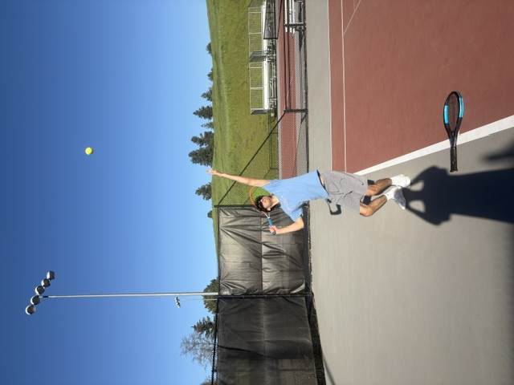

Trophy position is one of the most important aspects of serving. When you serve, no matter what type of serve you are doing, you want to reach this position after tossing the ball. To reach this position, you should have your tossing arm extented towards the ball after it has been tossed. Then with your racket hand, you should bring it up so the racket is behind and slightly above your head. Additionally, your knees should be bend like you are getting ready to jump. This makes the swinging motion much easier and gives you a lot more spin and power in your serve. This also helps prevent any injuries because it is a postion that gives your body much more flexibility.

A visual of trophy position
It can be hard to find trophy position. Remember that repetition and practice are the best ways to get better. Additionally, if you feel overwhelmed you can break it into steps until you are more familiar with the motions. I recommend starting with the tossing hand, then adding the knee bend, and finally finishing it with the racket postion.
A common mistake is rushing to get in and out of trophy position. Remember to toss the ball high enough so that you have enough time to get through the serve without rushing as this could cause injury and loss of power and spin.